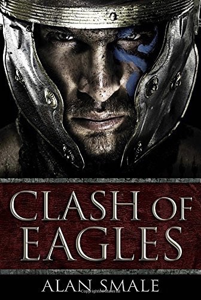

|
|  |
Clash of Eagles
|
Alan Smale
|
 |
History, Science, Alternative History
|
Del Rey
|
Perfect for fans of action-adventure and historical fiction—including novels by such authors as Bernard Cornwell, Steve Berry, Naomi Novik, and Harry Turtledove—this stunning work of alternate history imagines a world in which the Roman Empire has not fallen and the North American continent has just been discovered. In the year 1218 AD, transported by Norse longboats, a Roman legion crosses the great ocean, enters an endless wilderness, and faces a cataclysmic clash of worlds, cultures, and warriors.
Ever hungry for land and gold, the Emperor has sent Praetor Gaius Marcellinus and the 33rd Roman Legion into the newly discovered lands of North America. Marcellinus and his men expect easy victory over the native inhabitants, but on the shores of a vast river the Legion clashes with a unique civilization armed with weapons and strategies no Roman has ever imagined.
Forced to watch his vaunted force massacred by a surprisingly tenacious enemy, Marcellinus is spared by his captors and kept alive for his military knowledge. As he recovers and learns more about these proud people, he can’t help but be drawn into their society, forming an uneasy friendship with the denizens of the city-state of Cahokia. But threats—both Roman and Native—promise to assail his newfound kin, and Marcellinus will struggle to keep the peace while the rest of the continent surges toward certain conflict.
Praise for "Clash of Eagles"
“Just when it seems there is nothing new in [alternate] history comes this debut.”—"Library Journal "(starred review)
“An intriguingly original alternate history.”—"Kirkus Reviews"
“Authoritatively researched, compellingly told, and with pleasing echoes of L. Sprague de Camp, "Clash of Eagles "is a modern masterpiece of what-if speculation.”—Stephen Baxter, Philip K. Dick Award–winning author of "The Time Ships"
" "
“Alan Smale has done remarkable work with the world-building in "Clash of Eagles, "dropping the sole Roman survivor of a massacre into the complex civilization of the Cahokian Native Americans in the thirteenth century. Yet what follows is more than a standard clash of cultures yarn, for there are other forces in play in this alternate North America, and Marcellinus knows his imperial masters will send more legions to replace his lost men. Can the determination and ingenuity of one man change the fate of a continent? I’m eager to find out.”—Harry Turtledove, "New York Times" bestselling author of "How Few Remain"
“My favorite kind of alternate history: epic, bloody, and hugely imaginative.”—John Birmingham, author of "Without Warning"
"“Clash of Eagles" is epic in its sweep, exciting in its narrative, and eyeball-kick sharp in its details.”—Nancy Kress, Nebula and Hugo Award–winning author of "Beggars in Spain"
|
|
|
|